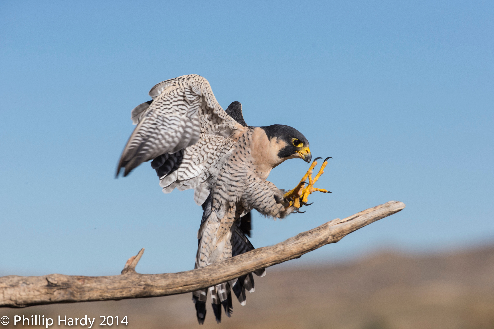

My name is Julian. This is my web page
This is the song that will keep you up at night singing it. Thats not something I only do right? I hope not. then this entire paragraph would be super awkward. You know what? I think I'm gonna stop typing now. Anyway, you should totally press the play button. Go. Now. Whats stopping you? Oh right, it's me. i have another awesome suggestion. I have the same song on my other page. You sould 1. Open the page in a new tab. 2. Play this song first. 3. When they start singing, go to the other page and start the song again. 4. Listen to the sweet, sweet sound of "Sample of My Pasta" by Bad Lip Reading. Go! Now! I TOLD YOU TO GO!!!!!!!!!!!!!!!!!!!!!!!!!!!!!!!!!!
Somehow I still haven't read Harry Potter, since I was scarred when I tried to read it when I was six. I, like other people, dont have a favorite book. I think that all books are good (exept for the ones that arent). I dont play fortnite, contrary to what some people belive (yes, there are weird people like that). When I grow up, I want to be an inventor. I would also like to go on Shark Tank, my favorite show. My sister is adicted to tv, so she pretty much picks all the shows until one of my parents step in. There. Two paragraghs about my life. Are you happy now?
The Perigrine Falcon is my favorite animal. It is also the fastest animal on the planet, having been recorded at over 200mph. Perigrines live on every single continent exept for Antarctica. They can live on the edge of rural cliffs to the tops of buildings in enormous cities. They are also an endangered species, and came very close to extinction because of DDT, a harmful pesdicide that sofened their shells so they couldn't hatch. This pesticide also affected Bald Eagles in the same way. DDT was eventually banned from being made or sold by the US government, and the Perigrine Falcon and the Bald Eagle made amazing comebacks.
Hey! There's another page! Click here to go!